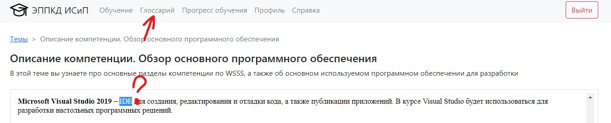
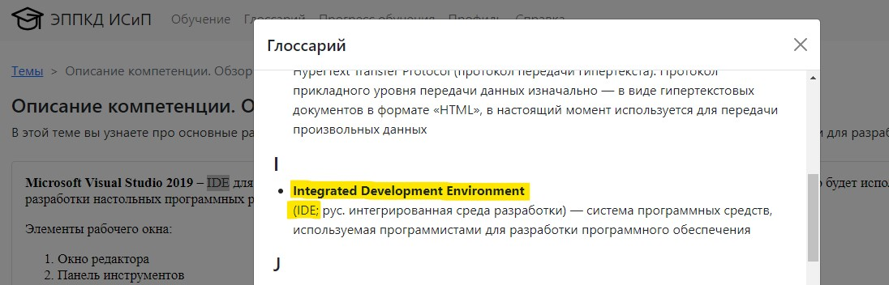

Если вам при изучении какой-либо темы встретился неизвестный термин, вы можете посмотреть его определение в глоссарии. Для этого необходимо в навигационном меню выбрать пункт "Глоссарий"

Перед вами откроется модальное окно со списком всех терминов, которые используются в курсе обучения. Все термины расположены в алфавитном порядке. Вы можете найти необходимый самостоятельно либо нажать комбинацию клавиш Ctrl + F и ввести термин в поле поиска

Как вы уже догадались, глоссарий можно открывать в любой момент, перехода на другую страницу не происходит, поэтому вы можете дальше продолжить изучение темы с того же места.